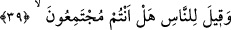

Mûsâ (a.s.)’ın yalanının ortaya çıkması için bugünü seçti. Sonunda olan oldu.
39. Halka: Siz de toplanıyor musunuz (haydi hemen toplanın), denildi.
Fir’avn tarafından “halka:” Mısır halkından ve başkalarından oraya gelmesi mümkün
olan kimselere: “Siz de toplanıyor musunuz (haydi hemen toplanın)” yani, hazırlanın
ve toplanın “denildi.”
Bu ifâde de toplanma konusunda onları yavaş bulma ve toplanmakta acele etmelerine
teşvik vardır. Cevap verilmemesinden anlaşıldığı üzere buradaki soru ile gerçek
anlamda soru kasdedilmemiştir.
40. (Fir’avn’un adamları:) Eğer üstün gelirlerse, herhalde sihirbazlara uyarız,
dediler.
Fir’avn’un adamları: “Eğer üstün gelirlerse, herhalde” biz hep birlikte Mûsâ’ya
değil “sihirbazlara uyarız, dediler.” Aslında onların amacı, sihirbazların dînîne
gerçekten uymak değil, Mûsâ (a.s.)’a tâbî olmamaktı. Ancak üstün gelme konusunda
ciddiyet ve önem verdiklerini göstermek için sözlerini kinâyeli olarak söylediler.
“Herhalde” demeleri tâbî olmak îtibâriyle değil tâbî olmayı gerekli kılan üstünlük
îtibâriyledir.
41. Sihirbazlar geldiklerinde Fir’avn’a: “Şâyet biz üstün gelirsek, muhakkak bize
bir ücret vardır değil mi?” dediler.
“Sihirbazlar geldiklerinde” Sihirbazlar Fir’avn’un yanına geldiklerinde onlara
ikramda bulundu, çok iltifatlar etti. Onlar küstahlaştılar, ne oldum budalası oldular.
“Fir’avn’a: “Şâyet” Mûsâ değil “biz üstün gelirsek, muhakkak bize bir ücret” büyük
bir ödül “vardır değil mi?” dediler.”